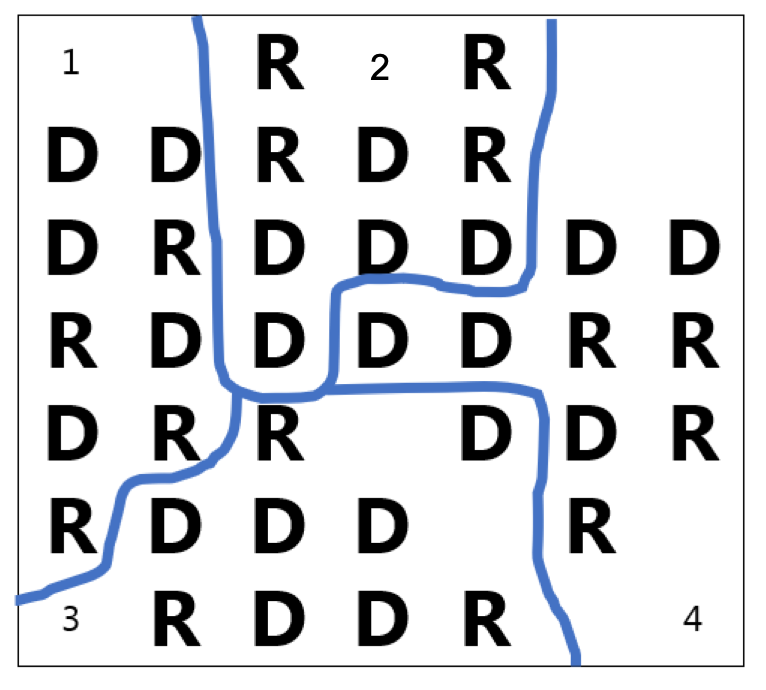
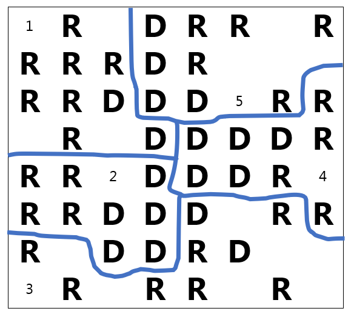

Determine fair representation based on the proportion of each party in a state
Explain what gerrymandering is and how packing and cracking work
Calculate the efficiency gap for a given map
Calculate the percentage of the population that each seat represents
Determine the number of seats that the efficiency gap represents and whether a map is fair
Draw district boundaries to form a gerrymandered map and a fair map
Figure5.4.1.Alternative Video Lessons
Subsection5.4.1Forming State Legislative Districts
As we saw in Section 5.1 the U.S. House of Representatives has 435 seats that are re-apportioned among the states every 10 years after the census. For example, in Oregon we currently have 5 legislative districts as shown in this map 1
. After the 2020 census is finished, that number could change. It has been projected that Oregon may get a 6th representative due to population growth from 2010 to 2020.
After a reapportionment, it is up to each state government to divide their population into equal districts which each elect their representative to the U.S. House. Each representative should represent approximately the same number of people, but their areas may not be the same. Due to different population densities in urban and rural areas, you can see in the map of Oregon that the districts are not geographically equal.
Currently in most states, the state legislature draws the district boundaries. That means the party in power is in charge of drawing the new districts and they could redraw the lines to help their own party. This is called gerrymandering. Gerrymandering, pronounced, “Jerrymandering,” is when districts are drawn to the political advantage of those drawing the boundaries.
Gerrymandering got its name from Elbridge Gerry, the governor of Massachusetts who signed a bill in 1812 that created the unusual district pictured here that looked like a salamander 2
“The Gerry-Mander” by Elkanah Tisdale (1771-1835), Originally published in the Boston Centinel, 1812 is in the Public Domain
. It gave then Democrat-Republicans a bigger state Senate majority, even though the Federalist party got more votes statewide.
Here are some current well-known gerrymanders. This one is called Pennsylvania’s “Goofy Kicking Donald Duck” 3
Gerrymandering has occurred by both parties. Gerrymandering by race is illegal due to the Voting Rights Act of 1965, so people of color cannot be spread out to dilute their vote. Groups with similar interests may want to be put together to form voting blocks, but that is controversial. Gerrymandering by political party has been the subject of many lawsuits and Supreme Court cases. One of the challenges is how to measure gerrymandering to prove that it has occurred. The measurement must be easy to explain and understand in court.
Several ways to measure gerrymandering have been proposed. Some of the first methods used geometry to measure how compact a district is, rather than the sprawling salamander. But it has been shown that being compact does not equate with fairness. More recent methods use computer simulations to determine whether a certain map is an extreme outlier compared to other possible maps, or measure something called partisan bias 5
In this book we will focus on the efficiency gap, proposed in 2015 by Nicholas Stephanopoulos and Eric McGhee. The efficiency gap is a measure of the advantage one party has over the other party due to the partisanship of the voters in each district.
Later in this section we will learn how to calculate and interpret the efficiency gap. First, let’s look at how we can tell whether a map is fair or not.
Subsection5.4.2Proportionality and Fairness
For a map to be fair, we would expect the portion of seats that a political party wins in an election to be about the same as the portion of that party in the state. This is called proportionality. For example, if a state is 50:50 Democrat to Republican, they should each get about half of the seats. There is nothing in the constitution that guarantees proportionality, but this is a basic measure of fairness. Let’s look at a couple of examples using fractions and decimals.
Example5.4.2.
If a state with 6 seats is \(\frac{1}{3}\) Republican and \(\frac{2}{3}\) Democrat, how many seats would each party have if the representation was proportional?
We will multiply the total number of seats by fraction that each party represents.
In this case the Republicans should have 2 seats and the Democrats should have 4 seats. The numbers won’t usually work out so nicely so let’s look at another example.
Example5.4.3.
If a state with 8 seats is \(55\%\) Republican and \(45\%\) Democrat, how many seats would each party have if the representation was proportional?
Solution.
We will multiply the total number of seats by the decimal portion that each party represents.
Republicans: \(8(0.55)=4.4\approx 4\) seats.
Democrats: \(8(0.045)=3.6\approx 4\) seats.
By rounding, the most fair combination would be Democrats with 4 seats and Republicans with 4 seats. This is not completely proportional, though, because we can’t assign fractions of seats.
Now that we can tell whether a map is fair, let’s see how gerrymandering works.
Subsection5.4.3How to Gerrymander
There are two main ways to gerrymander a map, by packing and cracking. Packing is when all the people of one political party are packed into a district. Since a party only needs a plurality or majority to win, all those extra votes would be surplus. Cracking dilutes a party’s votes by spreading out the voters so they can’t win as many districts.
Here is a small sample map to see how this works. In this fictitious state, we have 35 people and 5 districts. So we will need 7 people in each district. You can see how they are spread out in the map, with Republicans denoted by R’s and Democrats marked with D’s. To keep it simple, we are only looking at two parties and they will need a majority to win an election. We are also assuming that all voters will vote and that they vote according to their party which may not always be the case.
Figure5.4.4.A simplified state map
Before we draw a fair map, let’s try gerrymandering it for Democrats and then for the Republicans.
Example5.4.5.
We will first try to advantage the Democrats. There are 7 people in each district, so a party needs 4 votes to win the election. We will draw the lines to put 4 Democrats in each district along with 3 Republicans to spread them out by cracking. Here is our map.
We were able to get 4 Democrats and 3 Republicans in districts 1, 2, 3 and 5. The Republicans will win in district 4 because it will be 5-2, but if the 5th Republican had been in another district, the map would have been more fair. As it is drawn, the population is 17:18 but the seats are 1:4, which does not seem fair.
Figure5.4.6.The map gerrymandered in favor of Democrats
Subsection5.4.4The Efficiency Gap
To try to measure how unfair the map is, let’s learn how to calculate the efficiency gap. First, we will tally the votes in the table below, and note how the election results would turn out by using bold numbers for the party with more voters in each district. For example, there are 4 D’s and 3 R’s in district 1, so the Democrats would theoretically win that district.
District
D Votes
R Votes
D Surplus Votes
R Surplus Vote
1
4
3
2
4
3
3
4
3
4
2
5
5
4
3
Total
18
17
Election Results:
Democrats win 4 seats
Republicans win 1 seat
Next, we will calculate how many votes would be extra over the amount needed to win the election. These are the surplus votes. In this example, with 7 voters, the majority of a district is 4 votes, so we will subtract 4 from each winning side. From each losing side, all of the votes are considered surplus because they did not go toward electing a candidate of their party. Then we add all the surplus votes for each party.
District
D Votes
R Votes
D Surplus Votes
R Surplus Vote
1
4
3
\(4-4=0\)
3
2
4
3
\(4-4=0\)
3
3
4
3
\(4-4=0\)
3
4
2
5
2
\(5-4=1\)
5
4
3
\(4-4=0\)
3
Total
18
17
2
13
The difference between the surplus votes as a percentage of the population is the efficiency gap. As a formula it is written:
\(\frac{\text{Party A Surplus Votes } - \text{ Party B Surplus Votes}}{\text{Total Votes}}\)
To get a positive result, we put the larger number first and we have
\(\frac{13-2}{35}=\frac{11}{35} \approx 0.314\) or 31.4%.
The efficiency gap is 31.4%. To understand what this percentage means, we compare it with the percentage that each district represents in the state. Since our state has 5 districts, each one is 20% of the population. Here’s how we got that by dividing or as a fraction of the state.
\(100\% \div 5\) districts \(=20\%\text{,}\) or, \(\frac{1}{5}=0.20\) or \(20\%\)
In this case, the efficiency gap is worth more than one full seat, which suggests that the Democratic party has at least one extra seat than they would with proportional representation.
Example5.4.7.
For another example, we will take the same map and gerrymander it for the Republicans. This time we will pack as many Democrats as we can into the middle, and then use cracking to form the rest of the districts, trying to get 4 R’s in as many as we can. Here is the map.
Figure5.4.8.The map gerrymandered in favor of Republicans
Now, let’s fill in our table:
District
D Votes
R Votes
D Surplus Votes
R Surplus Vote
1
3
4
3
\(4-4=0\)
2
7
0
\(7-4=3\)
0
3
3
4
3
\(4-4=0\)
4
2
5
2
\(5-4=1\)
5
3
4
3
\(4-4=0\)
Total
18
17
14
1
Election Results:
Democrats win 1 seat
Republicans win 4 seats
To calculate our efficiency gap,
\(\frac{\text{Party A Surplus Votes } - \text{ Party B Surplus Votes}}{\text{Total Votes}} = \frac{14-1}{35}=\frac{13}{35} \approx 0.371\) or 37.1%.
This shows the opposite unfairness where the population is 17:18 but the seats are 4:1. We can calculate the number of seats that the efficiency gap is worth by dividing 37.1% by 20%.
\(37.1\% \div 20\% = 1.855\)
The efficiency gap is worth approximately 1.9 seats.
Stephanopoulos and McGhee gave a guideline of around 8% or less for the efficiency gap and this one is 37.1%. The Republicans have at least one extra seat than they would if the seats were proportional to the population.
Example5.4.9.
Now we will try to create a fair map and see what the efficiency gap is. There is an odd number of districts and the population is 17:18 so it might be challenging to make it fair.
With this map, we tried to have two districts that favored Democrats, two that favored Republicans, and one that might go either way. Since there is one extra Democrat, the population is 17:18 and the seats are 2:3
Figure5.4.10.A more fair map
Let’s see how the efficiency gap comes out in this situation:
District
D Votes
R Votes
D Surplus Votes
R Surplus Vote
1
3
4
3
\(4-4=0\)
2
4
3
\(4-4=0\)
3
3
4
3
\(4-4=0\)
3
4
3
4
3
\(4-4=0\)
5
4
3
\(4-4=0\)
3
Total
18
17
6
9
Election Results:
Democrats win 3 seats
Republicans win 2 seats
The efficiency gap is
\(\frac{\text{Party A Surplus Votes } - \text{ Party B Surplus Votes}}{\text{Total Votes}} = \frac{9-6}{35}=\frac{3}{35} \approx 0.0857\) or 8.57%.
This gap is much smaller than in our gerrymandered examples and near the 8% guideline. Due to the odd number of seats and even distribution of the parties, this is as small as we can get the efficiency gap in this situation. It is much less than 20%, which is one seat.
\(8.57\% \div 20\% = 0.4285\)
The efficiency gap is worth less than half a seat or about 0.43 seats.
There are still many court cases in progress alleging gerrymandered maps so it seems like a new solution is needed. Some alternatives are appointing independent commissions to draw the lines, or changing the system altogether with proportional representation 6
. The statisticians at FiveThirtyEight used a web application to draw new lines in all of the states according to six different measures. You can read about it in this article 7
When does redistricting of state districts happen?
2.
Who determines where the district lines are drawn?
3.
What are the two rules for drawing district lines?
4.
What are the two ways to gerrymander?
5.
If a state with 7 seats is 62% Republican and 38% Democrat, how many seats would each party have if the representation was proportional?
6.
If a state with 12 seats is 43% Republican and 57% Democrat, how many seats would each party have if the representation was proportional?
7.
If a state with 3 seats is 4/5 Republican and 1/5 Democrat, how many seats would each party have if the representation was proportional?
8.
If a state with 9 seats is 3/8 Republican and 5/8 Democrat, how many seats would each party have if the representation was proportional?
9.
If a state with 11 seats is 52% Republican, 40% Democrat and 8% Green Party, how many seats would each party have if the representation was proportional?
10.
If a state with 18 seats is 31% Republican, 58% Democrat and 11% Progressive Party, how many seats would each party have if the representation was proportional?
Exercise Group.
For each map in problems 11-20, complete the following:
How many votes are needed for a majority?
How many seats are won by each party?
Calculate the efficiency gap.
Calculate the percentage of the state that each district represents.
Calculate how many district seats the efficiency gap is worth.
Explain whether you think the map is fair and why or why not.
11.
This state has 4 districts with 7 people in each district.
12.
This state has 4 districts with 9 people in each.

13.
This state has 5 districts with 5 people in each.
14.
This state has 5 districts with 7 people in each.
15.
This state has 5 districts with 9 people in each.

16.
This state has 5 districts with 11 people in each.
17.
This state has 6 districts with 5 people in each.
18.
This state has 6 districts with 7 people in each.
19.
This state has 6 districts with 9 people in each.
20.
This state has 6 districts with 11 people in each.
Exercise Group.
For each map in problems 21-24, draw your own districts to find